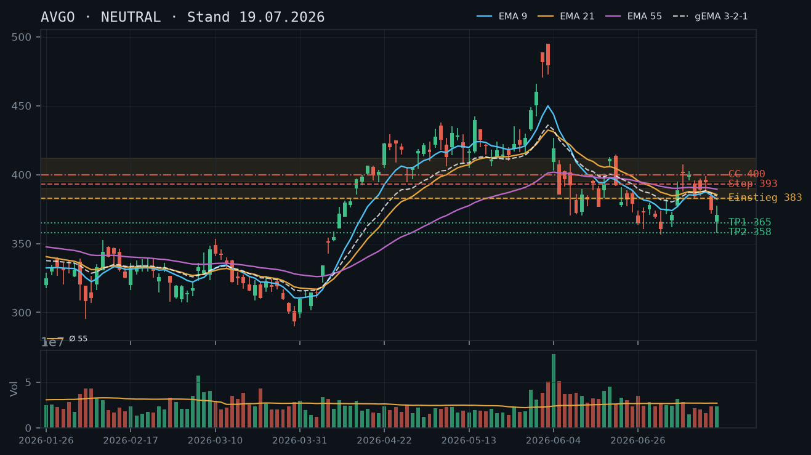
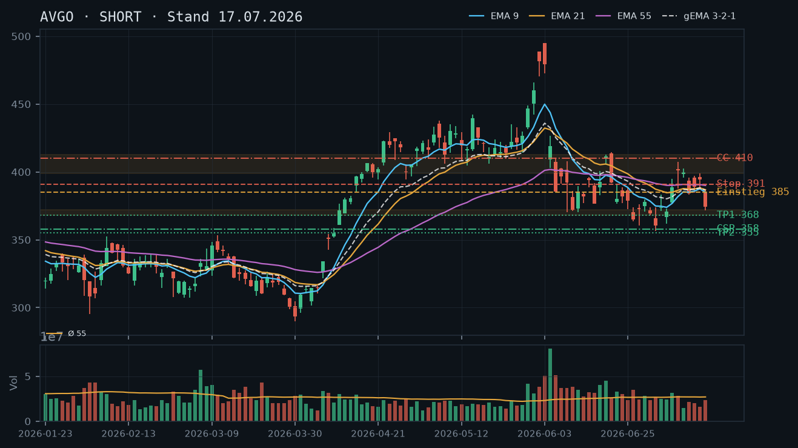
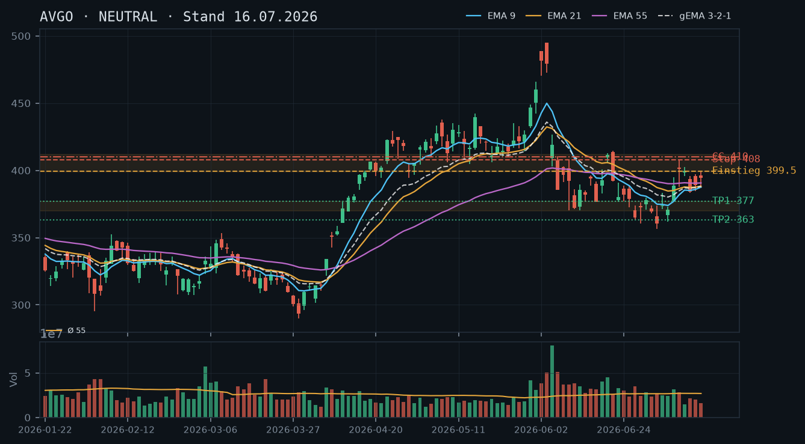

AVGO
Analyse-Historie · neueste zuerstAVGO testet mit dem gestrigen Ausbruchsversuch (Hoch 398,59) exakt den Widerstandscluster 399–402, ohne ihn zu schließen – der EMA-Verbund dreht erstmals nach oben, doch ohne Volumen-Bestätigung bleibt der Bias neutral mit leichter Long-Neigung.

1 · Trendstruktur
Die Trendstruktur zeigt eine laufende Gegenbewegung innerhalb eines intakten mittelfristen Abwärtstrends. Das Tief vom 17.07. bei 357,80 (intraday) bildete das jüngste Swing-Low nach dem dreifachen Test der Zone 368–372. Seitdem steigen die Hochs (377,35 → 383,59 → 398,59) und die Tiefs (357,80 → 375,96 → 380,00), was eine kurzfristige Aufwärtsstruktur andeutet. Entscheidend: Das Post-Crash-Hoch vom 10.07. bei 402,44 und das Hoch vom 15.07. bei 399,00 bilden den nächsten Widerstandscluster – dieser wird heute bereits intraday getestet (Kurs 398,77). Ein nachhaltiger Schlusskurs über 402,44 würde die kurzfristige Trendwende bestätigen; darunter bleibt die Erholung ein Rebound im Downtrend.
2 · Candlestick-Formationen
Die Kerze vom 22.07. ist die auffälligste der jüngsten Sequenz: langer oberer Docht (Hoch 398,59, Schluss 396,81), was auf Verkaufsdruck direkt im Widerstandsbereich hindeutet – klassisches Shooting-Star-Muster mit leichter Verschiebung. Davor: drei aufeinanderfolgende bullische Kerzen (20.–22.07.) mit steigenden Schlussständen, alle auf unterdurchschnittlichem Volumen (rel. Volumen 0,54 / 0,64 / 0,63). Die schwache Volumenentwicklung bei der Erholung widerspricht einer strukturellen Trendumkehr – der Rebound wirkt eher technisch/katalysatorgetrieben (EMA-Kompression) als fundamental fundiert.
3 · EMA-Lage (9 / 21 / 55)
Die EMA-Struktur hat sich gegenüber der 19.07.-Analyse spürbar verändert: EMA9 (385,26) < EMA21 (386,02) < EMA55 (389,18) – die bärische Reihenfolge bleibt formal intakt, doch der Abstand komprimiert stark. Der gema_321 liegt bei 386,17, nur knapp unter dem aktuellen Kurs (398,77), was den ersten echten Test des gewichteten EMA-Verbunds von oben seit dem Crash markiert. Bemerkenswert: EMA9 und EMA21 verlaufen seit dem 20.07. flach bis leicht steigend – ein mögliches Vorzeichen einer bullischen Kreuzung. Solange EMA9 nicht nachhaltig über EMA21 und der Kurs nicht über EMA55 (389,18) schließt, bleibt die übergeordnete EMA-Struktur bärisch geordnet.
4 · Trade-Setup
| Richtung | Kein Trade |
| Einstieg | Kein aktiver Einstieg – Marktstruktur erfordert Bestätigung |
| Stop | — |
| Ziel | — |
| CRV | — |
5 · Stillhalter (max. 12 Tage)
Der heutige Kursanstieg auf 398,77 bringt AVGO direkt in den Widerstandscluster 399–412. Der CC auf diesen Bereich ist damit das einzige saubere Stillhalter-Setup: technisch klar verankert, mit dem Widerstandscluster als natürlichem Puffer vor dem Strike. Ein CSP kommt trotz der verbesserten Kurslage nicht infrage – die Zone 368–372 ist nach dem Intraday-Bruch auf 357,80 (17.07.) strukturell kompromittiert, und ein neuer Support-Boden bei 380 ist erst durch einen einzigen Test belegt (unbestätigter Bereich). Qualität vor Vollständigkeit: kein CSP.
| Geschäft | Covered Call |
| Strike | 410.0 |
| Puffer | 2.8 % |
| Zone | über Widerstandscluster 399–412 (fallende Hochs: 15.07. bei 399,00 / 10.07. bei 402,44 / 18.06. bei 412,70) – unverändert aus den Voranalysen |
| Verfall bis | 2026-08-01 (9 Tage) |
| Begründung | Der Strike 410 liegt oberhalb eines dreifach bestätigten Widerstandsclusters (399,00 / 402,44 / 412,70). Durch den Kursanstieg der letzten Tage hat sich der Puffer von 9,5% (Stand 17.07.) auf jetzt ~2,8% stark verengt. Das ist die kritische Abwägung: Die technische Verankerung des Strikes ist nach wie vor sauber, aber der enge Puffer erhöht das Andienungsrisiko deutlich – ein einziger starker Aufwärtstag mit Schlusskurs über 402,44 würde die Widerstandszone brechen und den CC unter Druck setzen. Andienungsszenario: Ein Anstieg über 410 würde eine vollständige strukturelle Trendumkehr bedeuten und wäre – ohne Aktienbestand (IBKR: 0 Stück) – ein Naked Call mit unbegrenztem Verlustrisiko. In der Optionskette manuell prüfen: Ist die Prämie am 410er Strike bei ~2,8% Puffer noch attraktiv genug? Implizite Volatilität nach dem Sell-off vom 17.07. dürfte noch erhöht sein – das begünstigt die Prämie. Alternativ: Strike 415 prüfen (Puffer ~4,1%, Zone bleibt identisch). Roll-Trigger: Tagesschluss über 403 → CC sofort schließen oder auf 420+ rollen. |
Bestand: Keine offenen Optionspositionen und kein Aktienbestand in AVGO laut IBKR-Snapshot (Stand 11:37 Uhr). Der empfohlene CC ist damit ein Naked Call – Margin-Anforderungen bei IBKR vor Eröffnung zwingend prüfen. Der in der 19.07.-Analyse empfohlene Naked-Call-CC 400 (Verfall 25.07.) ist offenbar nicht eingegangen worden (keine Position im Snapshot) – das war im Nachhinein korrekt, da AVGO von 374 auf knapp 399 gestiegen ist und der Strike 400 heute bereits intraday getestet wird.
Ausführliche Analyse vom 23.07.2026 anzeigen
AVGO – Detailanalyse 23.07.2026
1. Trendstruktur – Abgleich mit Voranalysen
Die 19.07.-Analyse wurde mit NEUTRAL / leichter Short-Neigung und einem Short-Rebound-Setup bei 383,00 abgegeben. Dieser Einstieg wurde nicht ausgelöst – AVGO notierte am 19.07. beim Analysezeitpunkt bei ~374,50 (Schluss 378,16 am 20.07.) und stieg seitdem kontinuierlich. Das Short-Setup ist damit obsolet. Die Zielzone 358,00 (Retest Hammer-Tief) wurde nicht mehr angelaufen.
Die Sequenz der letzten vier Handelstage (20.–23.07.) zeigt eine klare kurzfristige Aufwärtsstruktur mit höheren Hochs (383,59 → 390,58 → 398,59 → intraday ~399) und höheren Tiefs (375,96 → 379,22 → 380,00). Das ist technisch eine höhere Hoch / höheres Tief-Struktur – das erste Anzeichen einer kurzfristigen Trendwende seit dem Crash vom 04.06.
Entscheidende Niveaus für den weiteren Verlauf:
- 399,00 / 402,44: Widerstandscluster aus zwei lokalen Hochs (15.07. / 10.07.) – heute intraday bereits getestet. Schlusskurs darüber = bullisches Signal.
- 412,70: Post-Crash-Hoch vom 18.06. – nächster relevanter Widerstand im bullischen Szenario.
- 388,90–389,18 (EMA55): Dynamischer Widerstand, der gestern (Schluss 396,81) bereits gebrochen wurde – jetzt potenzielle Unterstützung.
- 380,00 / 379,22: Unbestätigter Support-Bereich (erst ein Test, 20.–21.07.) – kein valider Boden im technischen Sinne.
- 368–372: Zone aus der Voranalyse – durch den Intraday-Bruch auf 357,80 (17.07.) strukturell kompromittiert. Ihre Funktion als primärer Support ist geschwächt; sie könnte als sekundäre Unterstützung fungieren, falls der Kurs nochmals fällt.
2. Candlestick-Analyse
Die Kerze vom 22.07. (Schluss 396,81, Hoch 398,59, Tief 380,00, Eröffnung 380,20) ist eine große bullische Kerze mit langem oberen Docht. Der Kurs öffnete auf dem Tagestief, stieg bis 398,59 und schloss bei 396,81 – der Docht zeigt Verkaufsdruck genau im Widerstandsbereich. rel. Volumen: 0,63 (unterdurchschnittlich). Das ist ein klassisches Warnsignal: Starke Kursbewegung auf schwachem Volumen = mangelnde Überzeugung der Käufer.
Davor: Die Kerzen vom 20.–21.07. (rel. Volumen 0,54 / 0,64) sind ebenfalls volumenschwach. Die gesamte Erholungssequenz seit dem 17.07. läuft auf unter 70% des Durchschnittsvolumens – ein konsistentes Bild: technischer Rebound, kein institutionelles Kaufinteresse. Zum Vergleich: Der Ausverkauf vom 04.06. (rel. Volumen 3,40) und 05.06. (2,11) hatten ein Vielfaches des normalen Volumens.
3. EMA-Analyse – Trendwende im Ansatz
Die EMA-Lage hat sich gegenüber dem 17.07. verändert: EMA9 (385,26) unter EMA21 (386,02) unter EMA55 (389,18) – bärische Reihenfolge formal intakt, aber der Abstand zwischen den EMAs beträgt nur noch ~4 Punkte. Der gema_321 bei 386,17 liegt erstmals seit dem Crash unter dem Schlusskurs (396,81 gestern / ~399 heute).
Kritische Beobachtung: EMA9 und EMA21 flachen seit dem 20.07. ab und zeigen erste steigende Tendenz. Sollte EMA9 über EMA21 kreuzen (bullisches Kurzfrist-Signal) und der Kurs über EMA55 (389,18) nachhaltig schließen (was gestern bereits geschah), ist eine EMA-Restrukturierung in Gang. Für eine vollständige Trendwende (EMA9 > EMA21 > EMA55 in bullischer Reihenfolge) sind noch mehrere Tage mit steigenden Kursen erforderlich.
4. Trade-Setups – Alternative Szenarien
Setup A (Bullischer Ausbruch – bevorzugt bei Bestätigung): Schlusskurs heute über 402,44 mit überdurchschnittlichem Volumen (rel. Volumen > 1,2) wäre ein valides Long-Signal. Einstieg: 403,00 (Stop-Buy über 402,44). Stop: 389,00 (unter EMA55 und gema_321). Ziel 1: 412,70 (Post-Crash-Hoch 18.06.) → CRV ~0,7:1 (zu schwach). Ziel 2: 425,00 (nächster Widerstand Mitte April) → CRV ~1,6:1 (akzeptabel). Fazit: Setup nur bei starkem Volumen valide – aktuell nicht aktiv, da Volumen fehlt.
Setup B (Scheitern am Widerstand – Short-Rebound): Abweisende Tageskerze heute mit Schluss unter 393,00 (Bestätigung Shooting-Star-Muster vom 22.07.). Einstieg: 392,00 (Stop-Sell). Stop: 403,00. Ziel: 372,00 (Zone aus Voranalysen). CRV: ~2,5:1. Fazit: Logisch konsistent mit dem übergeordneten Abwärtstrend, aber erst bei heutiger Bestätigung relevant.
Setup C (Kein Trade heute): Der Kurs kämpft exakt am Widerstand – weder Ausbruch noch Scheitern ist bestätigt. Bevorzugte Haltung: abwarten, kein aktiver Richtungs-Trade.
5. Stillhalter-Analyse (Schwerpunkt)
Covered Call / Naked Call – Strike 410
Zonen-Herleitung: Der Strike 410 liegt ~2,8% über dem aktuellen Kurs (398,77) und oberhalb des dreifach bestätigten Widerstandsclusters (399,00 / 402,44 / 412,70). Die Zone 399–412 hat seit dem Post-Crash-Hoch vom 18.06. (412,70) drei relevante Hochpunkte produziert und damit Widerstandscharakter. Der Strike soll den Widerstand als Puffer vor sich haben – das ist bei 410 erfüllt, aber der Puffer zur unmittelbaren Widerstandskante (399,00) beträgt nur ~2,8%. Das ist dünn.
Kritische Abwägung zum Puffer: In den Voranalysen (17.07.) hatte der Strike 410 noch 9,5% Puffer – dieser ist durch den Kursanstieg auf ~399 jetzt auf 2,8% geschrumpft. Wer einen höheren Puffer präferiert, sollte Strike 415 prüfen (Puffer ~4,1%, immer noch innerhalb des Widerstandsclusters) oder Strike 420 (Puffer ~5,3%, knapp über dem Cluster). Die Entscheidung hängt von der verfügbaren Prämie ab: Bei erhöhter impliziter Volatilität (nach dem Sell-off vom 17.07. wahrscheinlich) kann der 410er trotz engem Puffer eine attraktive Prämie liefern.
Andienungsszenario: Ohne Aktienbestand (IBKR: 0 Stück) ist jeder Short Call ein Naked Call mit theoretisch unbegrenztem Verlustrisiko. Eine Andienung ist bei einem Naked Call nicht anwendbar – stattdessen droht bei Kurs über Strike eine unbegrenzte Mark-to-Market-Verlustentwicklung. Margin-Anforderungen zwingend vorab bei IBKR prüfen.
Roll-Trigger und Management: Der wichtigste Trigger ist ein Tagesschluss über 402,44 – das würde den Widerstandscluster brechen und das technische Bild bullisch umkehren. Bei einem solchen Schlusskurs: CC sofort schließen (Verlust begrenzen) oder auf 415–420, Verfall 08.08. rollen (innerhalb 12-Tage-Frist). Ein zweiter Trigger ist ein Schlusskurs über 412,70 (Post-Crash-Hoch) – dann ist der übergeordnete Abwärtstrend strukturell in Frage gestellt; in diesem Fall kein Rollen, sondern Schließen.
In der Optionskette manuell zu prüfen: Prämie am 410er (und 415er) für Verfall 01.08.2026; Bid/Ask-Spread und Open Interest zur Beurteilung der Liquidität; implizite Volatilität im Vergleich zur historischen Volatilität der letzten 30 Tage; Delta sollte idealerweise zwischen -0,20 und -0,30 liegen.
CSP – Warum kein Setup
Der einzige technisch vertretbare CSP-Anker wäre die Zone 368–372. Diese ist jedoch nach dem Intraday-Bruch auf 357,80 (17.07.) strukturell geschwächt – ein Strike bei 358 (wie in der 17.07.-Analyse) hätte eine sehr geringe Prämie und liegt ~10% unter dem aktuellen Kurs. Ein CSP mit ~10% Puffer auf 12 Tage Laufzeit liefert in der Regel kaum attraktive Prämien. Zudem widerspricht es der Logik, gleichzeitig einen Naked Call (bärische Ausrichtung) und einen CSP (bullische Ausrichtung) zu eröffnen – Verkettungs-Prüfung negativ. Kein CSP.
Abgleich mit historischen Analysen
Die 16.07.-Analyse (CC 410, Verfall 25.07.) war technisch korrekt – der Strike wurde nie bedroht (Kurs fiel auf 357,80). Die 17.07.-Analyse (CSP 358, CC 410, Verfall 24.07.) war ebenfalls korrekt – beide Strikes blieben weit außerhalb der Reichweite. Die 19.07.-Analyse (Naked Call CC 400, Verfall 25.07.) war rückblickend das richtige Setup, um nicht einzugehen – AVGO stieg von ~374 auf 399 und hätte den Strike 400 heute intraday getestet. Der in der 19.07.-Analyse genannte Roll-Trigger (Schlusskurs über 393) wäre am 21.07. (Schluss 386,50) noch nicht ausgelöst worden, aber am 22.07. (Schluss 396,81) hätte der Trigger gegriffen und eine sofortige Reaktion erfordert.
AVGO erholt sich von einem Doppel-Tief im Bereich 357–372, doch der fallende EMA-Verbund und fehlende Volumen-Bestätigung lassen keinen klaren Long-Trend erkennen – neutraler Bias mit leichter Short-Neigung, Stillhalter-Fokus auf CC.

1 · Trendstruktur
AVGO befindet sich seit dem Post-Earnings-Crash am 04.06. (Tief 403,01, Schlusskurs 418,91) in einem intakten Abwärtstrend mit fallenden Hochs und fallenden Tiefs. Die Sequenz lautet: Hoch 495,00 (03.06.) → Hoch 412,70 (18.06.) → Hoch 402,44 (10.07.) → Hoch 399,00 (15.07.) – damit ist die Abwärts-Struktur mit drei bestätigten fallenden Hochs klar etabliert. Auf der Unterseite wurde die Zone 368–372 inzwischen viermal getestet (10.06. Tief 371,17; 01.07. Tief 368,03; 16.07. Tief 371,90; 17.07. Tief 357,80 – Bruch!). Kritisch: Das Tief vom 17.07. bei 357,80 hat die zuvor dreifach bestätigte Zone 368–372 nach unten gebrochen. Der Schlusskurs 370,83 liegt zwar wieder über dieser Zone (Hammer-artiges Reversal), doch ein echter Zonen-Bruch mit anschließendem Schlusskurs nahe der Unterkante schwächt den Support-Charakter deutlich. Der aktuelle IBKR-Kurs 374,45 (Stand 12:09 Uhr, 19.07.) deutet auf eine leichte Erholung hin, die sich technisch als Rebound in den Widerstandsbereich 380–390 einordnen lässt.
2 · Candlestick-Formationen
Die Kerze vom 16.07. ist ein klar bärischer Marabozu-Körper (Open 384,54, Close 374,45, Range 371,90–386,74) mit überdurchschnittlichem Volumen (rel. 0,87). Die Kerze vom 17.07. ist technisch ein Hammer mit langem Docht nach unten (Tief 357,80, Close 370,83, Open 366,05) – klassisches Reversal-Signal nach beschleunigtem Sell-off. Allerdings: Das Volumen war mit rel. 0,86 nur durchschnittlich, was die Überzeugungskraft des Hammers schmälert. Ein Hammer ohne überdurchschnittliches Volumen ist ein unbestätigtes Reversal-Signal. Die heutige Kerze (bisher nur IBKR-Kurs 374,45) bewegt sich leicht über dem gestrigen Schlusskurs – eine Bestätigungskerze fehlt noch vollständig.
3 · EMA-Lage (9 / 21 / 55)
Der EMA-Verbund ist klar bärisch geordnet: EMA9 (382,13) unter EMA21 (385,44) unter EMA55 (389,39), alle drei fallend – keine Anomalie, saubere Abwärtsstruktur. Der gema_321 (384,44) liegt ebenfalls über dem aktuellen Kurs, was den gesamten EMA-Verbund als Widerstandsdach bestätigt. Der Kurs (374,45) handelt unter allen drei EMAs mit einem Abstand von ca. 7,7 Punkten zum EMA9 (382,13). Ein Rebound würde zunächst auf den EMA9-Bereich 382–385 treffen – das ist der erste relevante Widerstand. Die 17.07.-Analyse (Short-Einstieg bei Rebound auf EMA9/21-Cluster 385,00) bleibt damit strukturell aktuell.
4 · Trade-Setup
| Richtung | Short |
| Einstieg | 383.00 (Rebound-Verkauf an EMA9/gema_321-Cluster, Bestätigung durch abweisende Kerze) |
| Stop | 393.00 (über EMA21/55-Cluster und lokales Hoch 15.07. bei 399,00) |
| Ziel | 358.00 (Retest Hammer-Tief 17.07. / Zielzone aus Voranalyse) |
| CRV | 2.2 : 1 |
5 · Stillhalter (max. 12 Tage)
Der Hammer vom 17.07. reicht ohne Volumen-Bestätigung nicht aus, um einen CSP zu rechtfertigen – die Zone 368–372 ist durch den Intraday-Bruch auf 357,80 strukturell angeschlagen. Der CC auf den Widerstandscluster 399–412 bleibt das einzige saubere Stillhalter-Setup im aktuellen Kontext. Kein CSP in einer Zone, die gerade gebrochen wurde.
| Geschäft | Covered Call |
| Strike | 400.0 |
| Puffer | 6.8 % |
| Zone | über Widerstandscluster 395–412 (fallende Hochs: 15.07. bei 399,00, 10.07. bei 402,44, 18.06. bei 412,70) |
| Verfall bis | 2026-07-25 (6 Tage) |
| Begründung | Der Strike 400 liegt knapp über dem jüngsten lokalen Hoch vom 15.07. (399,00) und innerhalb des gut bestätigten Widerstandsclusters aus drei fallenden Hochs (399, 402, 412). Der Puffer von 6,8% ist technisch sauber: Für einen Anstieg über 400 müssten alle drei EMAs (aktuell 382–389) überwunden werden – ein Szenario, das bei intaktem Abwärtstrend und fehlendem Katalysator unwahrscheinlich ist. Andienung bei 400,00 wäre bei einer vollständigen Sektor-Erholung ein komfortabler Exit; ohne Aktienbestand (IBKR: 0 Stück) handelt es sich um einen Naked Call mit entsprechend anderem Risikoprofil und Margin-Anforderung. Wichtig: In der Optionskette prüfen – Prämie im Verhältnis zum 6,8%-Puffer, Liquidität am 400er Strike, implizite Volatilität nach dem Sell-off vom 17.07. dürfte erhöht sein. Roll-Trigger: Schlusskurs über 393 (EMA21-Annäherung) → Roll nach oben auf 410 prüfen. |
Bestand: Kein Aktienbestand und keine offenen Optionspositionen in AVGO laut IBKR-Snapshot (Stand 12:09 Uhr). Der empfohlene CC ist damit ein Naked Call – bitte Margin-Anforderungen bei IBKR vor Eröffnung prüfen.
Ausführliche Analyse vom 19.07.2026 anzeigen
AVGO – Detailanalyse 19.07.2026
1. Trendstruktur – Abgleich mit Voranalysen
Die Abwärtsstruktur seit dem Earnings-Crash (03./04.06.) ist unverändert intakt und hat sich gegenüber der 17.07.-Analyse sogar verschärft. Die drei fallenden Hochs (412,70 / 402,44 / 399,00) bilden eine klare Trendlinie. Kritisch neu: Das Tief vom 17.07. bei 357,80 hat die in der 17.07.-Analyse als 'dreifach bestätigte Zone' klassifizierte Unterstützung 368–372 nach unten durchbrochen. Der Schlusskurs 370,83 liegt zwar wieder innerhalb der Zone (klassische Whipsaw-Bewegung oder Hammer-Reversal), doch technisch gilt: ein Bruch auf Schlusskurs-Basis ist erst dann klar negiert, wenn der Kurs die Zone nachhaltig zurückerobert und über 375–378 schließt.
Die 17.07.-Analyse hatte den CSP-Strike 358,00 mit 4,4% Puffer unter der Zone empfohlen. Dieser Strike liegt jetzt nur noch 0,8% unter dem Tief vom 17.07. (357,80) – damit wäre der CSP bei einer Andienung exakt im Bereich des jüngsten Tiefs gelandet. Das ist eine wichtige Lektion aus der Verkettungs-Prüfung: Der Puffer war korrekt dimensioniert, aber die Zone hat sich als dünner erwiesen als ein dreifacher Test suggeriert hätte.
2. Candlestick-Analyse – Hammer ohne Überzeugung
Der Hammer vom 17.07. (Open 366,05 / Tief 357,80 / Close 370,83) hat klassische Reversal-Optik: Der Docht nach unten beträgt ca. 13 Punkte, der Körper liegt im oberen Drittel der Tagesrange. Allerdings fehlt das entscheidende Element – das Volumen war mit rel. 0,86 nur durchschnittlich. Ein echter Capitulation-Hammer in einem solchen Marktkontext sollte rel. Volumen von mindestens 1,5–2,0x zeigen (zum Vergleich: 04.06. bei rel. 3,40x, 05.06. bei rel. 2,11x).
Die heutige Eröffnung (IBKR 374,45 bei unverändertem Stand 12:09) bestätigt die Hammer-Kerze im Sinne eines 'keine weiteren Verkäufe', liefert aber noch keine Bestätigungskerze. Eine grüne Kerze mit Schlusskurs über 378 (ehemalige Unterkante der Zone und mehrfach getestetes Niveau vom 25.06./24.06.) würde die Erholung technisch bestätigen.
3. EMA-Verbund und Widerstandsdach
Der EMA-Verbund (EMA9: 382,13 / EMA21: 385,44 / EMA55: 389,39 / gema_321: 384,44) bildet ein kompaktes Widerstandsdach zwischen 382 und 390 – alle EMAs fallen und liegen über dem aktuellen Kurs. Der Abstand EMA9 zum aktuellen Kurs beträgt ca. 8 Punkte (2,1%). Ein Rebound-Versuch würde folgende Widerstände sequenziell antreffen:
- 378,00: Mehrfach getestete Zone (Schlusskurse 24.06./25.06./30.06.), unbestätigter Bereich
- 382–385: EMA9/gema_321-Cluster – erster harter Widerstand
- 385–390: EMA21/EMA55-Dach – Zone mit hoher Wahrscheinlichkeit für Abweisung im Abwärtstrend
- 395–412: Bestätigter Widerstandscluster aus drei fallenden Hochs
4. Trade-Setups (Alternative A/B/C)
Setup A – Bevorzugt: Rebound-Short an EMA9
Einstieg: 383,00 (abweisende Kerze an EMA9/gema_321, Stop-Sell darunter)
Stop: 393,00 (über EMA21/55 und klar über lokalen Hochs 13.–15.07.)
Ziel 1: 365,00 (Rückkehr an untere Zone-Grenze)
Ziel 2: 358,00 (Retest Hammer-Tief 17.07.)
CRV zu Ziel 1: 1,5:1 / CRV zu Ziel 2: 2,2:1
Bedingung: Kerze mit Hochpunkt 382–386 und Schlusskurs unter 381
Setup B – Aggressiv Long: Bestätigungs-Breakout
Einstieg: 378,50 (Stop-Buy über 378, Bestätigung der Zonen-Rückeroberung)
Stop: 363,00 (unter Hammer-Tief mit Puffer)
Ziel: 392,00 (EMA21/55-Dach)
CRV: 0,9:1 – nicht empfohlen, CRV zu schwach, Widerstandsdach zu nah
Setup C – Bruch-Short (Trend-Fortsetzung)
Einstieg: 356,00 (Stop-Sell unter Hammer-Tief 357,80)
Stop: 368,00 (zurück in Zone)
Ziel: 335,00 (Projektion, keine historische Struktur im Datensatz)
CRV: 1,8:1 – Vorsicht: Zielzone ist reine Projektion ohne Bestätigung
5. Stillhalter-Analyse (Schwerpunkt)
Warum kein CSP?
Die 17.07.-Analyse hatte den CSP 358 unter der 'dreifach bestätigten Zone 368–372' empfohlen. Heute ist diese Begründung geschwächt: Das Tief 357,80 vom 17.07. hat den Strike 358,00 intraday fast exakt getroffen. Ein CSP mit Strike 358 wäre in einen Markt hineinverkauft worden, der seinen eigenen Support brach. Das ist der zentrale Unterschied gegenüber der Voranalyse-Einschätzung.
Für einen neuen CSP bräuchte man einen Strike unter 345,00 (ca. 8% Puffer zum aktuellen Kurs), was bei max. 6 Tagen Restlaufzeit bis 25.07. kaum ausreichend Prämie generieren wird. Ein CSP ist in dieser Marktphase – Zone angeschlagen, Abwärtstrend intakt, kein bestätigter Boden – nicht empfehlenswert. Qualität vor Vollständigkeit.
CC auf 400 – Herleitung und Andienungslogik
Der Strike 400 ist technisch sauber abgeleitet:
- Lokales Hoch 15.07.: 399,00 – der Strike liegt knapp darüber
- Lokales Hoch 10.07.: 402,44 – der Strike liegt darunter
- Lokales Hoch 18.06.: 412,70 – der Strike liegt 3,2% darunter
- EMA-Dach 382–390: Der Strike hat einen zusätzlichen Puffer von 10–18 Punkten über dem EMA-Verbund
Für einen Anstieg über 400 innerhalb von 6 Tagen müsste AVGO: (1) den EMA-Verbund bei 382–390 überwinden, (2) drei bestätigte fallende Hochs überschreiten, (3) einen Anstieg von 6,8% vom aktuellen Kurs vollziehen. Das ist im intakten Abwärtstrend ohne Katalysator ein konservatives Szenario.
Andienungsszenario: Würde AVGO tatsächlich auf 400+ steigen und der CC ausgeübt, wäre das eine strukturelle Trendumkehr. In diesem Fall wäre das Geschäft als 'aggressiver Verkauf nahe dem neuen Hoch' zu werten – technisch vertretbar, da 400 gleichzeitig ein starker Widerstand ist. Ohne Aktienbestand (IBKR: 0 Stück) ist dies ein Naked Call – das Risikoprofil unterscheidet sich fundamental vom Covered Call. Die theoretisch unbegrenzte Verlustseite muss über Margin und Stop-Logik kontrolliert werden.
Roll-Trigger: Schlusskurs über 390 (EMA55-Überschreitung) → Roll auf Strike 412–415 prüfen, Restlaufzeit innerhalb von 12 Tagen. Schlusskurs über 399 (Bruch des letzten Hochs) → sofort schließen oder auf nächsten Widerstand 412 rollen.
In der Optionskette manuell prüfen: Prämie am 400er Strike (Verfall 25.07.), implizite Volatilität (nach Sell-off vermutlich erhöht, was höhere Prämien ergibt), Bid-Ask-Spread und Open Interest am 400er.
Abgleich Voranalysen
Der CC-Strike 410 aus der 16.07.-Analyse bleibt technisch valid, hat aber inzwischen einen Puffer von ca. 9,5% (unverändert aus 17.07.-Analyse) und generiert bei 6 Tagen Restlaufzeit vermutlich sehr wenig Prämie. Der Strike 400 ist der aktivere, prämientechnisch attraktivere Strike bei gleichzeitig technisch sauberem Widerstand. Wer konservativer agieren möchte, kann beim 410er bleiben – Prämie vs. Puffer in der Kette vergleichen.
Das Ziel der 16.07.-Analyse (372,00) wurde am selben Tag fast punktgenau erreicht (Tief 371,90) – ausgelöst durch eine sektorweite Halbleiter-Verkaufswelle (SK-Hynix-Nachrichten), nicht durch den ursprünglich vorgesehenen Einstiegs-Trigger (399,50), der nie erreicht wurde. Bemerkenswert: Die Zone um 371-372 ist jetzt bereits dreifach getestet (10.06., 01.07., 16.07.) – ein für diese Analyse ungewöhnlich gut bestätigtes Niveau.

1 · Trendstruktur
Die NEUTRAL/Short-These vom 16.07. (Ziel 372,00) wurde nicht über den vorgesehenen Trigger 399,50 ausgelöst – dieser wurde nach der Analyse nie mehr erreicht, da der Kurs bereits darunter lag. Stattdessen fiel der Kurs am 16.07. im Zuge einer breiten Sektor-Verkaufswelle direkt von 394,28 auf ein Tief von 371,90 (-5,0% an einem Tag) – nahezu exakt am Ziel. Bemerkenswert: Dieses Niveau (371-372) wurde bereits am 10.06. (Tief 371,17, Schluss 372,10) und am 01.07. (Schluss 369,34) getestet – die Zone ist damit inzwischen dreifach bestätigt, deutlich robuster als die zuvor einzig referenzierte 363,83er-Marke vom 26.06.
2 · Candlestick-Formationen
15.07.: Schluss 394,28, letzte Konsolidierungskerze vor dem Ausverkauf. 16.07.: Eröffnung 384,535 (bereits unter Gap), Tief 371,90, Schluss 374,45 – eine große rote Kerze, die im unteren Drittel schließt, aber bei nur unterdurchschnittlichem Volumen (rel_volumen 0,87) trotz der Größe der Bewegung – ungewöhnlich für einen Tag mit sektorweiten Schlagzeilen.
3 · EMA-Lage (9 / 21 / 55)
Weiterhin bearische Reihenfolge: EMA9 (384,95) < EMA21 (386,90) < gema_321 (386,46) < EMA55 (390,08), alle fallend. Der Kurs (374,45) liegt rund 10 Punkte unter EMA9 – der Trend bleibt technisch klar intakt und hat sich durch die Sektorbewegung weiter beschleunigt.
4 · Trade-Setup
| Richtung | Short |
| Einstieg | Rebound-Verkauf bei 385,00 (Erholung Richtung EMA9/21-Cluster) oder Bruch-Verkauf unter 368,00 (Bruch der jetzt dreifach getesteten Zone) |
| Stop | 391,00 (Rebound-Szenario, über EMA55) bzw. 375,00 (Bruch-Szenario) |
| Ziel | 355,00 (Verlängerung – WICHTIG: reine Projektion unterhalb der dreifach getesteten Zone, keine weitere historische Struktur in diesem Datensatz) |
| CRV | 2,8 : 1 bis 5,0 : 1 (Rebound-Szenario, je nach Ziel) / 1,5 : 1 (Bruch-Szenario, schwächer da bereits nah am Ziel) |
5 · Stillhalter (max. 12 Tage)
Die Zone 368-372 hat sich durch den dritten Test deutlich verbessert und ist jetzt ein solider CSP-Anker – eine Aufwertung gegenüber der 16.07.-Einschätzung, die nur einen einzigen Test (363,83) kannte. Der Widerstandscluster 399-412 bleibt trendkonform für einen CC, jetzt mit deutlich größerem Puffer.
| Geschäft | Cash-Secured Put |
| Strike | 358.0 |
| Puffer | 4.4 % |
| Zone | unter der jetzt dreifach getesteten Zone 368,03–372,10 (10.06., 01.07., 16.07.) |
| Verfall bis | 2026-07-24 (7 Tage) |
| Begründung | Strike liegt unter der inzwischen dreifach bestätigten Zone – eine der am besten abgesicherten Support-Zonen in dieser gesamten Analyseserie. Der Puffer ist mit 4,4% bewusst enger als bei anderen Titeln, da die Zone selbst ungewöhnlich robust ist. Andienung bei 358,00 wäre ein Einstieg knapp unter einem mehrfach verteidigten Niveau – im Kontext eines Sektor-Sell-offs (nicht AVGO-spezifisch) vertretbar. Prüfen: Prämie im Verhältnis zum 4,4%-Puffer, Liquidität am 358er. |
| Geschäft | Covered Call |
| Strike | 410.0 |
| Puffer | 9.5 % |
| Zone | über dem Widerstandscluster 399-412 (Post-Crash-Hochs 18.06. bei 412,70 und 10.07. bei 402,44) – unverändert aus der 16.07.-Analyse |
| Verfall bis | 2026-07-24 (7 Tage) |
| Begründung | Strike unverändert aus der Vorlage, aber durch den Kursrückgang jetzt mit deutlich größerem Puffer (9,5% statt 4,0%). Ein Anstieg von fast 10% binnen 7 Tagen im intakten Abwärtstrend nach einem sektorweiten Ausverkauf wäre außergewöhnlich. Andienung bei 410,00 wäre nur bei einer vollständigen Sektor-Erholung relevant und dann ein sehr komfortabler Exit. Prüfen: Prämie im Verhältnis zum 9,5%-Puffer, Liquidität am 410er. |
Ausführliche Analyse vom 17.07.2026 anzeigen
AVGO – Ziel durch Sektor-Ausverkauf erreicht, Zone deutlich gestärkt
1. Wie sich die 16.07.-These entwickelt hat
Der vorgesehene Einstiegstrigger (399,50, Stop-Sell unter dem Bereich 399-402) wurde nie erreicht – der Kurs lag zum Zeitpunkt der Analyse bereits darunter (394,28) und fiel direkt weiter. Das Ziel (372,00) wurde trotzdem nahezu exakt getroffen (Tief 371,90), ausgelöst durch eine sektorweite Nachricht (SK Hynix verlangsamt HBM-Speicher-Expansion), die den gesamten asiatischen und US-Halbleitersektor traf – nicht durch ein AVGO-spezifisches Ereignis.
2. Die wichtigste neue Erkenntnis: Die Zone ist jetzt dreifach bestätigt
Bei genauerem Blick in die historischen Daten zeigt sich, dass die Marke 371-372 keine willkürliche Zielprojektion war, sondern bereits zweimal zuvor eine echte Umkehrzone war: 10.06. (Tief 371,17, Schluss 372,10) und 01.07. (Schluss 369,34). Mit dem dritten Test am 16.07. ist das jetzt eine der am besten bestätigten Zonen dieser gesamten Analyseserie – ein deutlicher Unterschied zur 16.07.-Einschätzung, die nur das einmal getestete Tief 363,83 kannte.
3. Setup-Szenarien
Für frische Shorts ist ein Rebound-Verkauf (385,00, Stop 391,00) mit CRV 2,8-5,0:1 deutlich attraktiver als ein direktes Verfolgen auf aktuellem Niveau oder ein sofortiger Bruch-Verkauf (367,00, Stop 375,00, CRV nur 1,5:1), dessen Chance-Risiko-Verhältnis wegen der Nähe zum bereits erreichten Ziel eingeschränkt ist.
4. Stillhalter-Vertiefung
CSP bei 358,00 (4,4% Puffer): Aufgewertet gegenüber der Vorlage dank der jetzt dreifachen Zonenbestätigung – eine der solidesten CSP-Begründungen in dieser Serie. CC bei 410,00 (9,5% Puffer, unverändert aus der Vorlage): Durch den Kursrückgang jetzt mit deutlich mehr Sicherheitsabstand. Andienungsszenario CSP: Kauf bei 358,00 knapp unter einer dreifach verteidigten Zone – im Kontext eines sektorweiten statt unternehmensspezifischen Ausverkaufs vertretbar. Andienungsszenario CC: Abgabe bei 410,00 nur bei vollständiger Sektor-Erholung. Rollentrigger CSP: Tagesschluss unter 368,00. Rollentrigger CC: Tagesschluss über 399,00 mit Volumen.
5. Abgleich mit früherer Analyse
Die NEUTRAL/Short-thesis vom 16.07. wird im Ergebnis bestätigt (Ziel erreicht), allerdings über einen anderen Mechanismus als vorgesehen (Sektor-Gap statt Trigger-Auslösung). Die wichtigste Aktualisierung: Die Unterstützungszone ist jetzt dreifach statt einfach bestätigt, was die Stillhalter-Einschätzung von 'nur CC' auf 'beides' anhebt.
AVGO befindet sich in einer komprimierten EMA-Zone ohne klaren Trend – der Kurs kämpft mit dem fallenden EMA-Verbund, was einen neutralen Bias mit leichter Short-Neigung ergibt.

1 · Trendstruktur
AVGO zeigt nach dem brutalen Sell-off von ~495 (02.06.) auf ~360 (26.06.) eine zaghafte Erholung, die jedoch noch keine neuen Higher Highs produziert hat. Die Trendstruktur ist technisch bearish: Das letzte signifikante Hoch vom 10.07. bei 402,44 liegt unter dem Post-Crash-Hoch vom 18.06. bei 412,70 – eine klassische Abfolge fallender Hochs. Das Tief vom 02.07. bei 356,43 ist das jüngste relevante Swing-Low. Aktueller Kurs 394,28 befindet sich in der Mitte zwischen diesem Tief und dem Widerstandscluster 399–412 USD.
2 · Candlestick-Formationen
Die letzte Kerze (15.07.) ist eine bullische Inside-Bar mit Schlusskurs 394,28 und rel. Volumen von nur 0,61 – schwaches Commitment. Davor zeigte der 14.07. ebenfalls eine neutrale Kerze nahe dem EMA-Cluster. Die Kerze vom 08.07. war die einzige wirklich starke Aufwärtskerze der jüngsten Erholung (rel. Volumen 1,18). Insgesamt: Die Rallye von 360 auf 401 erfolgte ohne überzeugendes Volumen, was die Nachhaltigkeit in Frage stellt.
3 · EMA-Lage (9 / 21 / 55)
Das EMA-Bild ist komprimiert und bärisch geordnet: EMA9 (387,58) < EMA21 (388,15) < EMA55 (390,66) – alle drei fallen leicht oder konsolidieren. Der gema_321 liegt bei 388,28, praktisch identisch mit dem EMA-Cluster. Der Kurs bei 394,28 notiert ÜBER dem gesamten EMA-Verbund, ist aber nur knapp darüber – das ist ein typisches Bear-Market-Rally-Szenario, bei dem der Kurs gegen fallende EMAs drückt. Solange EMA9 nicht nachhaltig über EMA21 und EMA55 zieht, bleibt der strukturelle Bias bearisch.
4 · Trade-Setup
| Richtung | Short |
| Einstieg | 399.50 (Stop-Sell unter dem Bereich 399–402, Bestätigung durch schwache Kerze) |
| Stop | 408.00 |
| Ziel | 372.00 |
| CRV | 2.8 : 1 |
5 · Stillhalter (max. 12 Tage)
Bei einer bärisch geordneten EMA-Struktur, fallenden Hochs und einer volumenschwachen Erholung ist ein Covered Call das logischere Stillhaltergeschäft. Ein CSP ist derzeit unattraktiv, da kein tragfähiger Boden bestätigt ist – das Tief vom 26.06. bei 363,83 wurde nur einmal getestet. Der CC oberhalb des Widerstandsclusters 399–412 bietet einen technisch sauberen Strike.
| Geschäft | Covered Call |
| Strike | 410.0 |
| Puffer | 4.0 % |
| Zone | Widerstandscluster 399–412 (Post-Crash-Hochs 18.06. bei 412,70 und 10.07. bei 402,44) |
| Verfall bis | 2026-07-25 (9 Tage) |
| Begründung | Der Strike 410 liegt oberhalb des lokalen Hochs vom 10.07. (402,44) und unmittelbar unter dem Post-Crash-Hoch vom 18.06. (412,70). Die Zone 399–412 hat zwei relevante Hochpunkte und damit einen Widerstandscharakter, der als Puffer dient. Ein Kurs über 410 würde eine strukturelle Trendumkehr signalisieren – in diesem Fall wäre das Rollen des CC nach oben angebracht. Puffer zum aktuellen Kurs: ~4,0%. |
Ausführliche Analyse vom 16.07.2026 anzeigen
AVGO – Technische Analyse vom 16.07.2026
1. Trendstruktur
Der langfristige Kontext: AVGO hatte nach dem Parabolic-Anstieg bis ~495 USD (02.06.2026, rel. Volumen 1,69) einen vernichtenden Gap-Down am 04.06. auf 403/426 mit rel. Volumen von 3,40 – dem höchsten im gesamten Datensatz. Das war ein Distribution-Event erster Klasse. Der Abverkauf setzte sich fort bis zum Tief vom 26.06. bei 363,83 USD (rel. Volumen 1,31).
Die anschließende Erholung produzierte folgende Swing-Hochs: 412,70 (18.06.), 411,35 (18.06. Schlusskurs), dann Rückfall, neues Tief 356,43 (02.07.), Erholung auf 407,52 (09.07.) – damit ein niedrigeres Hoch als 412,70. Anschließend Konsolidierung mit aktuell 394,28. Fazit: Abfolge fallender Hochs und fallendes Tief (356,43 unter 363,83) = intakter Abwärtstrend auf Tagesbasis.
Kritische Zonen:
- Widerstand 399–412 USD: Zwei Hochs (407,52 am 09.07. und 412,70 am 18.06.) – bestätigter Widerstandsbereich
- Widerstand 418–430 USD: Konsolidierungszone April/Mai – weitere Hürde im Fall einer Trendumkehr
- Support 370–377 USD: Mehrfach getesteter Bereich (08.07. Tief 376,89; 30.06. Tief 370,64; 01.07. Schlusskurs 369,34) – unbestätigter Support, erst zwei enge Tests
- Support 356–364 USD: Tief-Zone vom 02.07. und 26.06. – einmalig berührt, noch kein bestätigter Support
2. Candlestick-Formationen
Die letzten fünf Kerzen zeigen ein klassisches Erschöpfungsbild nach einer Bären-Rallye:
- 09.07.: Starke bullische Kerze bis 407,52, Schlusskurs 401,11 – Volumen 1,04x Schnitt. Kurz unter dem Widerstand gedreht.
- 10.07.: Schwache Kerze, Schlusskurs 399,97, rel. Volumen nur 0,54 – Volumen-Austrocknung am Widerstand ist bärisches Signal.
- 13.07.: Bearishe Kerze, Schlusskurs 384,05 – Rückfall unter alle EMAs, rel. Volumen 0,79.
- 14.07.: Bullische Recovery-Kerze zurück auf 389,11, rel. Volumen 0,74 – schwaches Commitment.
- 15.07.: Inside-Bar, Schlusskurs 394,28, rel. Volumen 0,61 – Entscheidungsunfähigkeit. Der Kurs schiebt sich über den EMA-Cluster, ohne Überzeugung zu zeigen.
Das Muster: Volumen-Divergenz zur Aufwärtsbewegung – die Rallye von 360 auf 401 erfolgte bei insgesamt unterdurchschnittlichem Volumen, während der ursprüngliche Sell-off mit massivem Volumen einherging. Das spricht für eine technische Gegenbewegung, nicht für eine echte Trendumkehr.
3. EMA-Lage & gema_321
Aktuell: EMA9 = 387,58 | EMA21 = 388,15 | EMA55 = 390,66 | gema_321 = 388,28. Der Kurs (394,28) liegt ~1,5% über dem gesamten EMA-Verbund. Die Reihenfolge EMA9 < EMA21 < EMA55 ist bärisch, aber die Abstände sind extrem komprimiert (< 3,1 USD Spanne) – das ist ein EMA-Kompressionsartefakt nach der langen Seitwärts-/Abwärtsphase.
Wichtige Beobachtung: Der EMA55 fällt jetzt erstmals seit Monaten (von 401 Anfang Juni auf 390,66 heute) – das zeigt, dass der strukturelle Trend umgekippt ist. Der gema_321 fiel von ~425 Mitte Mai auf heute 388,28 – ein Rückgang von ~9% in 2 Monaten. Für eine echte Trendumkehr nach oben bräuchten wir: EMA9 > EMA21 > EMA55, alle steigend, mit Kurs deutlich über gema_321. Das ist aktuell nicht gegeben.
4. Trade-Setups (Direktional)
Setup A – Short (bevorzugt):
- Einstieg: 399,50 (Limit-Short oder Stop-Sell nach bärischer Bestätigungskerze im Widerstandsbereich)
- Stop: 408,00 (über lokalem Hoch 407,52 vom 09.07.)
- Ziel 1: 377,00 (Support-Zone 370–377) → CRV: 2,6:1
- Ziel 2: 363,00 (Tief-Bereich 26.06./02.07.) → CRV: 4,4:1
Setup B – Long (Kontratrend, nur bei Bestätigung):
- Voraussetzung: Tagesschluss >412,70 mit rel. Volumen >1,5x
- Einstieg: 413,50
- Stop: 399,00
- Ziel: 430,00 (nächste Widerstandszone) → CRV: 1,1:1 – kein attraktives Setup derzeit
Setup C – Warten: Solange der Kurs zwischen 377 und 402 pendelt, sind beide Seiten möglich. In dieser Range bietet sich kein direktionaler Trade an – ideale Stillhalter-Phase.
5. Stillhalter-Strategie (Schwerpunkt)
Covered Call – Strike 410 USD, Verfall 25.07.2026
Zonen-Herleitung: Der Widerstandsbereich 399–412 USD ist durch zwei bestätigte Hochs definiert: 407,52 (09.07.2026) und 412,70 (18.06.2026). Der Strike 410 liegt innerhalb dieser Zone, aber über dem letzten lokalen Hoch (407,52) – er hat damit das jüngste Hoch als Puffer vor sich. Der Puffer zum aktuellen Schlusskurs (394,28) beträgt 4,0%.
Andienungsszenario: Würde AVGO bei Verfall über 410 handeln, entspräche das einem Ausbruch über den gesamten Post-Crash-Widerstandscluster. Eine Andienung (Abgabe der Aktien zu 410) wäre in diesem Kontext akzeptabel, da der Strike über dem fairen technischen Wert der aktuellen Marktstruktur liegt. Bei einem Inhaber-Portfolio wäre das ein profitabler Exit.
Roll-Trigger: Wenn AVGO sich nachhaltig (2+ Tagesschlüsse) über 408 USD etabliert und der EMA9 über den EMA21 zieht, sollte der CC nach oben gerollt werden – idealerweise auf 420–425 Strike, da dort die nächste Widerstandszone liegt. Ein Roll ist auch angebracht, wenn noch >50% der Prämie eingenommen wurden und 5+ Tage Restlaufzeit verbleiben.
Was in der Optionskette zu prüfen ist:
- Prämie des 410 CC (25.07.): Ist die Prämie angemessen im Verhältnis zum 4% Puffer? Zielgröße: mind. 0,8–1,0% des Aktienwerts (ca. 3,15–3,95 USD) für das Risiko-Profil.
- Liquidität: AVGO ist ein Large-Cap mit typischerweise guter Optionsliquidität – Bid-Ask-Spread prüfen, sollte < 0,20 USD sein.
- Implizierte Volatilität (IV): Nach dem massiven Sell-off vom Juni dürfte die IV erhöht sein – das begünstigt den Prämienverkäufer.
Warum kein Cash-Secured Put?
Ein CSP würde eine technisch definierte Supportzone erfordern, die mehrfach bestätigt wurde. Die Zone 370–377 USD hat erst zwei enge Tests (01.07. und 08.07.) – das ist ein unbestätigter Bereich. Das Tief vom 02.07. bei 356,43 bietet noch weniger Halt. Hinzu kommt die bärische EMA-Struktur: Ein CSP im Abwärtstrend ohne soliden Boden ist ein schlechtes Risiko-Rendite-Verhältnis für den Stillhalter. Qualität vor Vollständigkeit – kein CSP in dieser Phase.
Abgleich mit früheren Analysen
Keine früheren Analysen vorhanden – diese Analyse steht ohne Vorläufer. Sollten künftige Analysen folgen, sind folgende Schlüsselmarken als Referenz festzuhalten: Post-Crash-Hoch 412,70 (18.06.), Tief 356,43 (02.07.), EMA55-Niveau 390,66 (heute, fallend).